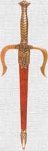
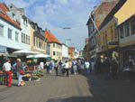

JERK RADICAL ALERT: the kanji means small city, but I have arbitrarily decided that the radical means dagger. Why would I do that? The following math equation should explain my decision with utmost logic:
市=
 >

Onyomi
Mnemonic
|
Since SHE lives in a small city, she carries a dagger for protection.
|
Jukugo
|
市長
|
mayor
★★☆☆☆
市 (small city) + 長 (long / boss)
= 市長 (mayor)
|
|
市民
|
citizens of a city
★★☆☆☆
市 (small city) + 民 (folk)
= 市民 (citizens of a city)
|
|
xxx
市
|
xxx-city
★☆☆☆☆
SUF
Suffix meaning, "xxx City"
|
|
株式市場
|
stock market
★☆☆☆☆
NEO
株式 (stocks) + 市 (small city) + 場 (place)
= 株式市場 (stock market)
株式（stocks)＋地場(marketplace)＝the stock market！
|
Used In
 KANJIDAMAGE
KANJIDAMAGE